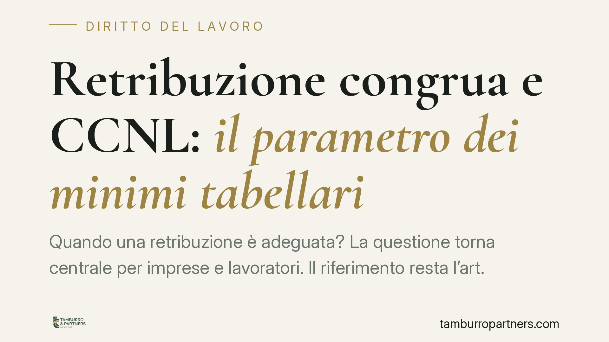

Retribuzione congrua e CCNL: il parametro dei minimi tabellari
Quando una retribuzione è adeguata? La questione torna centrale per imprese e lavoratori. Il riferimento resta l'art. 36 della Costituzione, letto dalla giurisprudenza attraverso i minimi tabellari dei contratti collettivi. Un tema delicato, dove la scelta del CCNL applicato e il divieto di comporre voci eterogenee incidono direttamente sulla legittimità delle buste paga.

Il quadro di riferimento: l'art. 36 della Costituzione
La nozione di retribuzione adeguata non nasce da un singolo decreto, ma da un principio costituzionale. L'art. 36 della Costituzione stabilisce che il lavoratore ha diritto a una retribuzione proporzionata alla quantità e qualità del lavoro e comunque sufficiente ad assicurare a sé e alla famiglia un'esistenza libera e dignitosa.
Si tratta di una norma immediatamente precettiva: il giudice può applicarla direttamente, anche in assenza di una legge che fissi un salario minimo generale. Da qui il ruolo che la giurisprudenza ha assegnato ai contratti collettivi nazionali (CCNL) come parametro di riferimento.
I minimi tabellari come indice di adeguatezza
Secondo un orientamento consolidato della Corte di cassazione, i minimi tabellari previsti dal CCNL di categoria costituiscono il principale parametro per verificare se una retribuzione rispetti l'art. 36 Cost. Il giudice non è formalmente vincolato a quei minimi, ma li utilizza come riferimento privilegiato per determinare la cosiddetta "giusta retribuzione".
Da segnalare l'indirizzo espresso dalla Cassazione nel 2023 (tra le altre, Cass. sez. lavoro, sentenze nn. 27711, 27713 e 28320 del 2023): il giudice, quando ritiene che il minimo di un determinato CCNL non garantisca una retribuzione sufficiente, può discostarsene, ma deve farlo con motivazione puntuale, potendo utilizzare come indici anche altri parametri esterni, compresi quelli internazionali.
Un punto merita chiarezza terminologica. Non tutti i contratti collettivi hanno lo stesso peso. La normativa e la giurisprudenza valorizzano i CCNL sottoscritti dalle organizzazioni sindacali e datoriali comparativamente più rappresentative sul piano nazionale. Questo criterio serve a contrastare il cosiddetto dumping contrattuale: l'applicazione di contratti "pirata", firmati da sigle scarsamente rappresentative, con l'obiettivo di abbattere il costo del lavoro sotto la soglia di dignità.
Il divieto di ricostruzione "a spezzatino"
Un profilo pratico rilevante riguarda la composizione della retribuzione. Non è ammesso costruire il trattamento economico prelevando singole voci da CCNL diversi, scegliendo di volta in volta l'importo più basso. La giurisprudenza tende a considerare il contratto collettivo come un sistema unitario: minimi, scatti, mensilità aggiuntive e istituti accessori vanno letti insieme, non smontati e ricomposti in modo opportunistico.
Questo principio ha un risvolto immediato per l'attività di controllo. Quando l'Ispettorato del lavoro verifica la congruità retributiva, valuta il trattamento nel suo complesso rispetto al CCNL di riferimento, evitando confronti frammentari tra voci eterogenee.
Un ambito specifico in cui la congruità retributiva assume rilievo normativo è quello degli appalti, dove opera il meccanismo del cosiddetto DURC di congruità (D.M. 143/2021), che verifica l'incidenza della manodopera nei lavori edili. Si tratta di un istituto settoriale, che non va confuso con un parametro generale valido per ogni rapporto di lavoro.
Implicazioni pratiche per le imprese
Per il datore di lavoro, la scelta del CCNL applicato non è neutra. Applicare un contratto poco rappresentativo, o comporre buste paga con voci disallineate dal contratto di categoria, espone a contenziosi individuali, a differenze retributive e a rilievi in sede ispettiva.
Per il lavoratore, il messaggio è speculare: la retribuzione va misurata sui minimi del CCNL di categoria applicabile, e uno scostamento significativo verso il basso può fondare una domanda di adeguamento ai sensi dell'art. 36 Cost.
Cosa fare in concreto
- Verificate il CCNL applicato: accertate che sia quello di categoria e sottoscritto da organizzazioni comparativamente più rappresentative sul piano nazionale.
- Confrontate le buste paga con i minimi tabellari vigenti, considerando l'intero sistema contrattuale e non le singole voci isolate.
- Evitate composizioni "a spezzatino": non mescolate istituti economici provenienti da contratti diversi.
- Nei rapporti di appalto, verificate gli adempimenti specifici in materia di congruità della manodopera dove previsti.
- Documentate le scelte: in caso di scostamento dai minimi, conservate elementi che ne giustifichino la ragionevolezza, nella consapevolezza che il giudice valuta caso per caso.
Consigliamo un riesame periodico dei trattamenti retributivi applicati, soprattutto in presenza di rinnovi contrattuali o di attività soggette a controllo ispettivo.
---
*Contributo informativo a cura di Tamburro & Partners - Avv. Giuseppe Tamburro. Non costituisce parere legale.*
Ogni storia di lavoro ha i suoi tempi.
Se gestisci HR e vuoi un confronto su contenzioso, ispezioni o licenziamenti, scrivi allo studio. Ti rispondiamo entro un giorno lavorativo.